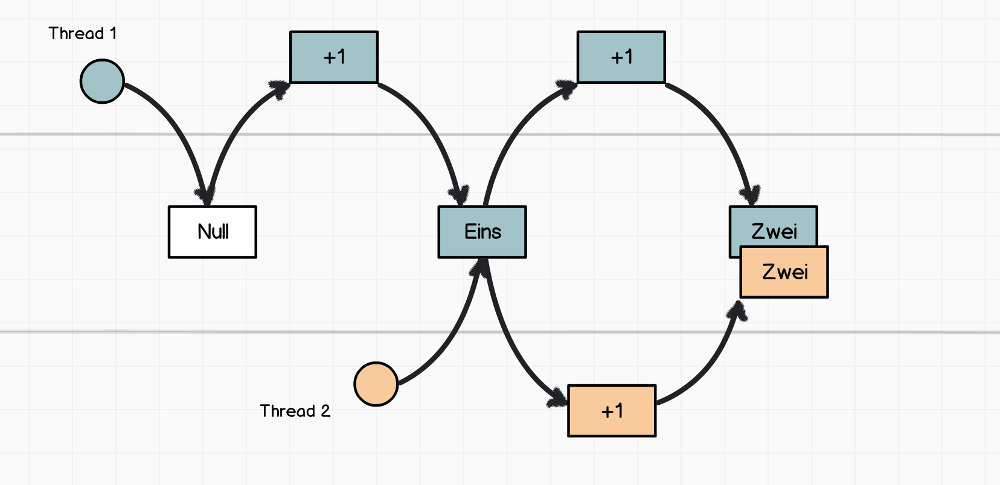
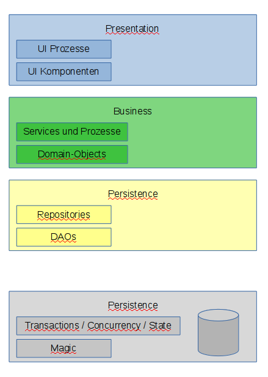
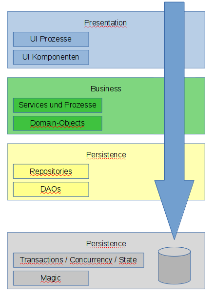
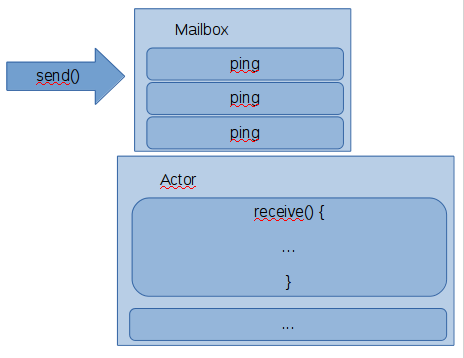

Multithreading done right
Java-Threads sind wie Assembler
Runnablebzw.Thread.run()für nebenläufige Prozessesynchronizedfür shared state- komplexe Konzepte: locks/semaphoren/mutexes (counting/reentrant), latches um den critical path zu schützen
- besser als Prozesse zu forken, aber viel mehr auch nicht
Race-Conditions
Sind schnell eingebaut, aber schwer zu finden und zu fixen


Spot the error
if (pool.hasMore()) {
return pool.get();
}
Architektur von Web-Applikationen

Architektur von Web-Applikationen

Wichtigstes Ritual
keine Variablen in Services oder Controllern
(höchstens als ThreadLocal)
Weil wir in Wirklichkeit immer Multithreaded sind!
Kein state in den wichtigsten Objekten
Objektorientierter Entwurf hilft nicht sondern stört in Multithreaded-Applikationen
Aktor vs. Objekt
Mailboxes und Messages

#Code
receive() und become() im CEPA
Keine Race-Condition!
Zustand und Übergang
Zustandsübergangsdiagramm

(danke, wikimedia)
FSM-Aktoren
ImportCoordinatorFSM when(Idle)
PartialImportFSM onTransition
Race-Conditions sind immer noch möglich
Wenn man sich etwas Mühe gibt
Aber zumindest sind sie offensichtlicher